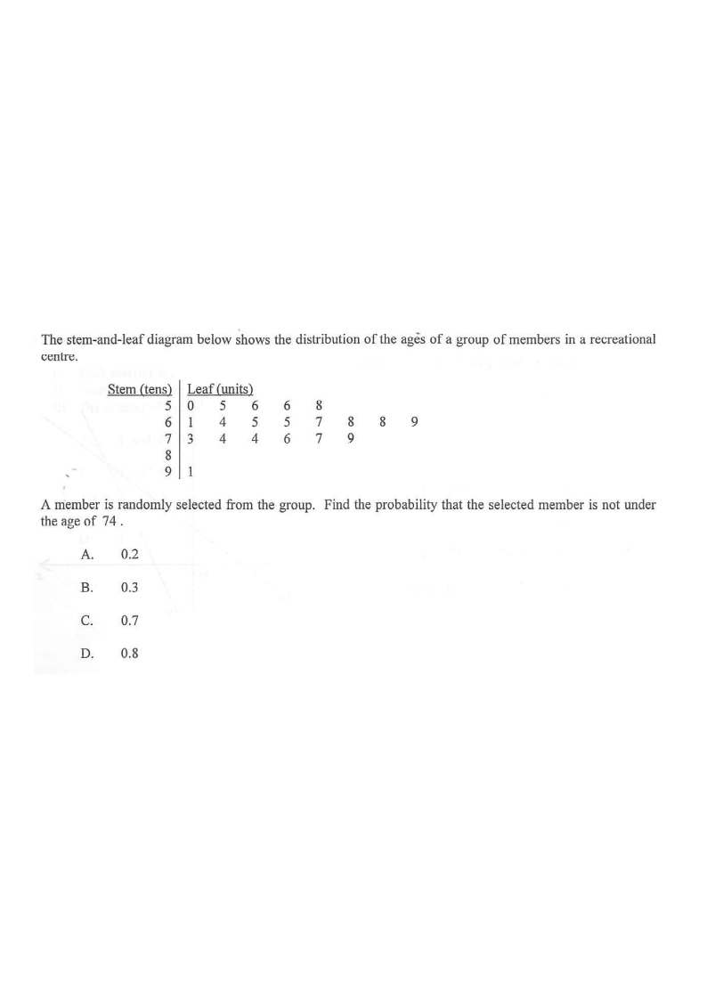

A member is randomly selected from the group. Find the probability that the selected member is not under the age of 74.
A. 0.2B. 0.3C. 0.7D. 0.8

Figure (original exam diagram)
Step-by-step Solution
1Read the stem-and-leaf diagram to list all ages.
Reading a Stem-and-Leaf Diagram\(\text{stem }5\mid\text{leaf }6\ \Longrightarrow\ 56\)The stem gives the tens digit and the leaf the units digit, so the diagram lists every age exactly once.
Count carefully: there are 5 + 8 + 6 + 0 + 1 = 20 members in total.
2Identify the total number of members.
Total members $n = 5 + 8 + 6 + 0 + 1 = 20$.
This is the denominator of our probability.
3Find how many members are under the age of 74.
"Under 74" means age $< 74$, i.e. age $\le 73$.
From the diagram: rows $5$, $6$ and the leaves $3,4,4$ in row $7$.
Count: $5 + 8 + 3 = 16$ members.
Do not include the two 74s in row 7.
4Find how many members are not under 74.
Complement Rule\(P(A^{\prime})=1-P(A)\)Instead of counting the members aged \(74\) and above one by one, subtract the \(16\) members under \(74\) from \(20\).
Probability of Equally Likely Outcomes\(P(E)=\dfrac{n(E)}{n(S)}\)Each of the \(20\) members is equally likely to be chosen, so divide the \(6\) favourable cases by \(20\).
$$P(\text{not under }74) = \frac{6}{20} = 0.3.$$
Simplify: $\frac{6}{20} = \frac{3}{10} = 0.3$.
Answer: B. 0.3
PRACTICESimilar question — try it yourself
Question. The stem-and-leaf diagram below shows the ages of the \(15\) members of a club (stem = tens, leaf = units): stem \(4\): \(1,3,4,4,6\); stem \(5\): \(2,3,5,5,7,8,8\); stem \(6\): \(1,2,4\). A member is chosen at random. Find the probability that the member is under \(55\).
Show the worked solution
Step 1. Read the ages: \(41,43,44,44,46,\ 52,53,55,55,57,58,58,\ 61,62,64\). Count the leaves: \(5+7+3=15\) members.
Step 2. Under \(55\) means age \(<55\): from stem \(4\) all \(5\) members, and from stem \(5\) only \(52\) and \(53\). So there are \(5+2=7\) members.
Step 3. The two \(55\)s are not under \(55\), so they are excluded.